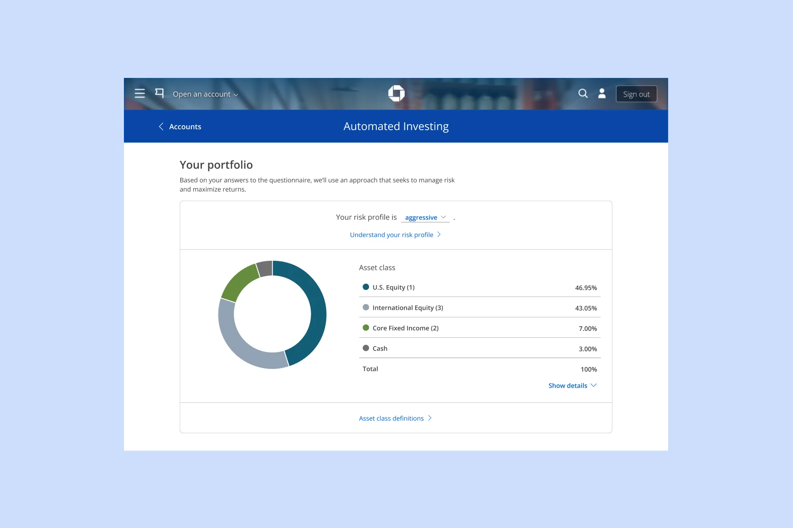

Eric Wagner
Staff Product Designer at Workiva
I design complex enterprise products and AI workflows that scale design quality across teams.
Currently, I lead AI projects on the Financial Reporting team at  Workiva. Along the way, I developed AI workflows that enabled engineering teams to ship UI updates independently, and designed core reporting tools that drove a 35% increase in YoY bookings.
Workiva. Along the way, I developed AI workflows that enabled engineering teams to ship UI updates independently, and designed core reporting tools that drove a 35% increase in YoY bookings.
At  Chase, I built a virtual meeting platform connecting clients nationwide with thousands of wealth advisors, earning a 9.5/10 client rating at launch.
Chase, I built a virtual meeting platform connecting clients nationwide with thousands of wealth advisors, earning a 9.5/10 client rating at launch.
Projects
Historical Data Roll Forward

Chase Advisor Video Platform

J.P. Morgan Automated Investing